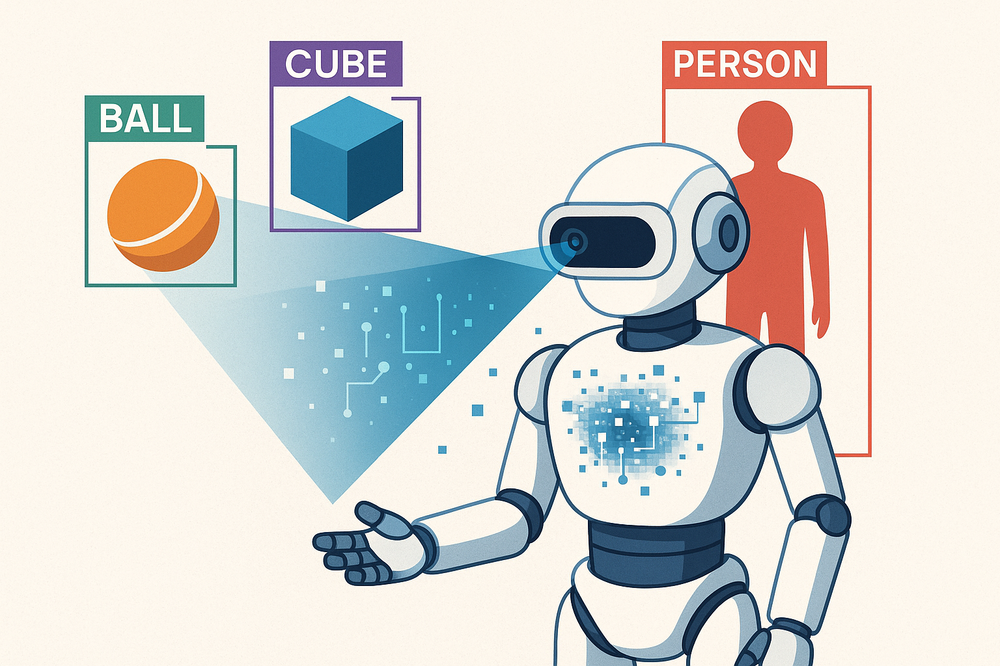
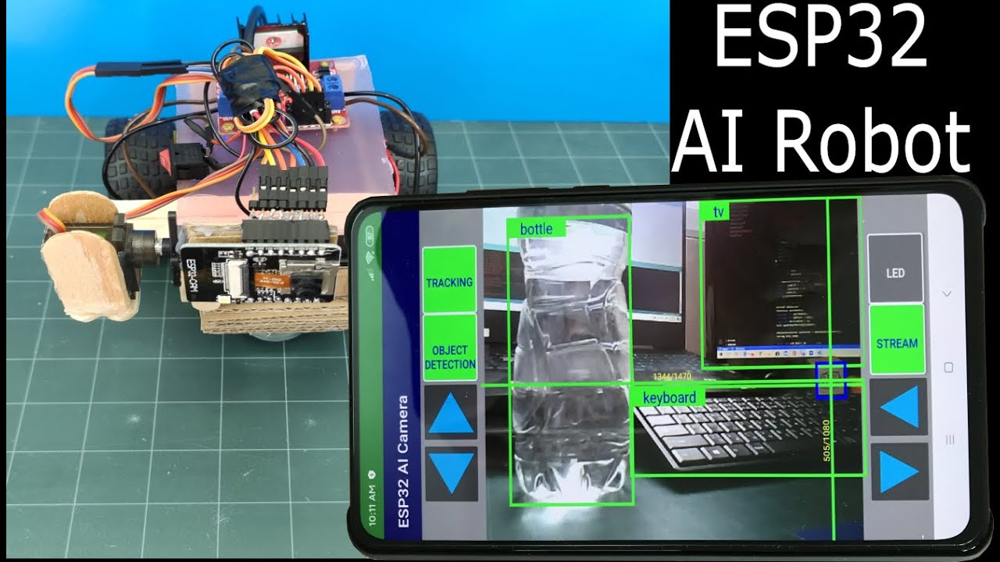

Currículo Detalhado
Raspberry Pi e Linux
10 horas • 4 aulas
Módulo 3.1: Introdução à Visão Computacional
Bem-vindo ao Nível Expert: Dando Olhos aos Robôs
Você chegou ao nível final e mais emocionante do curso! Nos níveis anteriores, construímos robôs que podiam navegar usando sensores de toque e de proximidade. Agora, vamos dar um salto quântico e equipar nossos robôs com o sentido mais poderoso de todos: a visão.
A Visão Computacional é um campo da Inteligência Artificial que treina computadores para interpretar e entender o mundo visual. Usando imagens digitais de câmeras e vídeos, os robôs podem identificar objetos, navegar em ambientes complexos e interagir com o mundo de uma forma muito mais humana.
 Figura 1: Um robô usando visão computacional para identificar e categorizar objetos em seu ambiente.---
Hardware para Visão Robótica
Para que um robô possa "ver", ele precisa de uma câmera. A escolha da câmera depende do poder de processamento disponível e da complexidade da tarefa.
ESP32-CAM
O ESP32-CAM é uma placa de desenvolvimento incrivelmente barata e compacta que combina um microcontrolador ESP32-S com uma câmera (geralmente o modelo OV2640). É a porta de entrada perfeita para projetos de visão computacional em robótica.
- Vantagens: Baixo custo, tamanho reduzido, baixo consumo de energia, Wi-Fi integrado para streaming de vídeo.
- Limitações: Poder de processamento limitado, não é ideal para algoritmos de IA complexos diretamente na placa (embora possa executar modelos mais simples).
Câmera para Raspberry Pi
O Raspberry Pi é um computador de placa única muito mais poderoso que o ESP32. Quando combinado com seu módulo de câmera oficial, ele se torna uma plataforma de visão computacional formidável, capaz de executar análises de vídeo em tempo real e rodar bibliotecas como o OpenCV com muito mais fluidez.
- Vantagens: Alto poder de processamento, suporte completo a sistemas operacionais (Linux), grande comunidade e compatibilidade com frameworks de IA avançados.
- Limitações: Maior custo, maior consumo de energia e tamanho maior em comparação com o ESP32-CAM.
 Figura 2: Um robô mais avançado utilizando um Raspberry Pi e uma câmera para tarefas de visão computacional.
Figura 2: Um robô mais avançado utilizando um Raspberry Pi e uma câmera para tarefas de visão computacional.
---
Conceitos Fundamentais de Visão Computacional
Uma imagem, para um computador, é apenas uma grande matriz de números. Cada número representa um pixel (o menor ponto de uma imagem). O trabalho da visão computacional é encontrar padrões significativos nesses números.
- Espaços de Cor: A forma como a cor de um pixel é representada. O mais comum é o RGB (Vermelho, Verde, Azul). Para muitas tarefas de processamento, as imagens são convertidas para escala de cinza (Grayscale), pois isso simplifica os cálculos (usando apenas um valor de intensidade por pixel em vez de três).
- Processamento de Imagem: Antes de qualquer análise complexa, as imagens geralmente passam por um pré-processamento para realçar características importantes. Isso inclui técnicas como:
- Thresholding (Limiarização): Converter uma imagem em escala de cinza para uma imagem puramente preta e branca, separando o objeto de interesse do fundo.
- Filtros (Blur/Suavização): Reduzir o ruído e os detalhes irrelevantes da imagem.
- Detecção de Bordas: Identificar os contornos dos objetos na imagem.
OpenCV: A Biblioteca Padrão
OpenCV (Open Source Computer Vision Library) é a biblioteca mais popular e poderosa para visão computacional. Ela fornece milhares de algoritmos otimizados para análise de imagem e vídeo em tempo real. É a ferramenta que usaremos para implementar a maioria das nossas funcionalidades de visão.---
Projeto Prático: "Olá, Mundo!" da Visão - Streaming de Vídeo com ESP32-CAM
Nosso primeiro projeto será configurar um ESP32-CAM para capturar vídeo e transmiti-lo (fazer streaming) via Wi-Fi para um navegador web. Este é o passo fundamental para qualquer projeto de visão remota.
Materiais Necessários:- 1x Placa ESP32-CAM com câmera OV2640
- 1x Conversor FTDI (ou um Arduino UNO) para programar o ESP32-CAM, pois ele não tem uma porta USB nativa para programação.
- Fios Jumper
- Conecte o Conversor FTDI ao ESP32-CAM:
- 5V do FTDI -> 5V do ESP32-CAM
- GND do FTDI -> GND do ESP32-CAM
- TX do FTDI -> U0R (RX) do ESP32-CAM
- RX do FTDI -> U0T (TX) do ESP32-CAM
- Modo de Flash: Para carregar o código, o pino GPIO 0 deve ser conectado ao GND. Coloque um jumper entre
GPIO0eGND.
- Configure o Arduino IDE: Vá em
Arquivo > Exemplos > ESP32 > Camerae abra o exemploCameraWebServer. - Selecione o Modelo da Placa: No código, descomente a linha
#define CAMERA_MODEL_AI_THINKER(ou o modelo correspondente à sua placa). - Insira suas Credenciais de Wi-Fi: Preencha os campos
ssidepasswordcom os dados da sua rede. - Carregue o Código: Selecione a placa "AI Thinker ESP32-CAM" em
Ferramentas > Placa. Compile e carregue o código. - Remova o Jumper: Após o carregamento, remova o jumper entre GPIO 0 e GND e pressione o botão de reset na placa.
- Abra o Monitor Serial na velocidade
115200. - O ESP32-CAM se conectará à sua rede Wi-Fi e imprimirá o endereço de IP onde o servidor de vídeo está rodando.
- Digite esse endereço de IP no seu navegador web.
- Você verá uma página com várias configurações da câmera. Clique no botão "Start Stream".
Pronto! Você estará vendo o vídeo ao vivo da sua câmera ESP32-CAM diretamente no seu navegador. Você agora tem um robô com um olho funcional. No próximo módulo, vamos ensinar esse olho a reconhecer objetos usando Inteligência Artificial.
OpenCV e Visão Computacional
12 horas • 6 aulas
Módulo 3.2: Reconhecimento de Objetos com Inteligência Artificial
Ensinando o Robô a Entender o que Vê
No módulo anterior, demos ao nosso robô o sentido da visão. Agora, vamos dar-lhe um cérebro capaz de interpretar essa visão. Não basta ver uma coleção de pixels; um robô inteligente precisa saber que aqueles pixels formam um "gato", uma "pessoa" ou um "obstáculo". É aqui que a Inteligência Artificial (IA), e mais especificamente as Redes Neurais Convolucionais (CNNs), entram em jogo.
---
O que é uma Rede Neural Convolucional (CNN)?
Inspiradas no córtex visual humano, as CNNs são um tipo especializado de rede neural projetado para processar dados que têm uma topologia de grade, como uma imagem. Em vez de olhar para cada pixel individualmente, uma CNN aprende a reconhecer características (features) em diferentes níveis de complexidade.
- Camadas Iniciais: Aprendem a detectar características simples, como bordas, cantos e cores.
- Camadas Intermediárias: Combinam essas características simples para reconhecer padrões mais complexos, como olhos, narizes ou texturas.
- Camadas Finais: Juntam esses padrões para identificar objetos completos, como o rosto de uma pessoa ou um carro.
Esse processo de aprendizado hierárquico torna as CNNs extremamente poderosas para tarefas de visão computacional, como classificação de imagens (dizer o que está na imagem) e detecção de objetos (encontrar onde os objetos estão na imagem e desenhar uma caixa ao redor deles).
 Figura 1: Um robô com IA não apenas vê, mas entende o conteúdo da imagem, permitindo interações muito mais complexas.---
Edge AI: IA na Ponta dos Dedos do Robô
Tradicionalmente, o processamento de IA exigia servidores poderosos na nuvem. No entanto, para um robô móvel, enviar um fluxo de vídeo para a internet, processá-lo e esperar a resposta é muito lento e depende de uma conexão constante. A solução é o Edge AI, ou IA na Borda.
Edge AI envolve a execução de modelos de IA diretamente no dispositivo (na "borda" da rede), como no nosso ESP32 ou Raspberry Pi. Isso proporciona respostas em tempo real e independência da internet.
TensorFlow Lite para Microcontroladores
TensorFlow Lite é uma versão otimizada do popular framework de machine learning do Google, projetada para rodar em dispositivos com recursos limitados. A variante TensorFlow Lite for Microcontrollers é ainda mais leve, permitindo que modelos de IA sejam executados em hardware com apenas alguns kilobytes de memória, como o ESP32.Ele converte um modelo treinado do TensorFlow em um formato compacto e eficiente, que pode ser integrado diretamente ao nosso código C++ no Arduino IDE.
---
Modelos Pré-treinados: O Conhecimento do Mundo ao seu Alcance
Treinar uma CNN do zero exige milhões de imagens e um poder computacional imenso. Felizmente, não precisamos fazer isso. Podemos usar modelos pré-treinados, que são modelos de IA que já foram treinados por grandes empresas (como Google e Facebook) em conjuntos de dados massivos (como o ImageNet).
- MobileNet: Uma família de modelos de visão extremamente eficientes, projetados especificamente para dispositivos móveis e embarcados. São ótimos para classificação de imagens (ex: "Esta imagem contém um cachorro").
- YOLO (You Only Look Once): Um modelo de detecção de objetos incrivelmente rápido e popular. Ele consegue identificar múltiplos objetos em uma imagem e desenhar caixas delimitadoras ao redor deles em uma única passagem.
Usar um modelo pré-treinado nos permite ter um sistema de visão de alta performance com muito pouco esforço. Também podemos usar uma técnica chamada Transfer Learning (Aprendizado por Transferência), onde pegamos um modelo pré-treinado e o re-treinamos com nossas próprias imagens para reconhecer objetos específicos do nosso interesse.
---
Projeto Prático: Detector de Pessoas com ESP32-CAM
Vamos criar um projeto incrível que demonstra o poder do Edge AI. Usaremos um ESP32-CAM com um modelo pré-treinado para detectar a presença de uma pessoa em seu campo de visão e acender um LED como alerta.
Materiais:- 1x ESP32-CAM
- 1x Conversor FTDI para programação
- 1x LED e 1x Resistor de 220Ω (opcional, para um indicador externo)
- A mesma do projeto de streaming de vídeo (Módulo 3.1). Se for usar o LED externo, conecte-o a um pino GPIO disponível (ex: GPIO 16).
O Arduino IDE para ESP32 já vem com um exemplo perfeito para isso.
- Abra o Exemplo: Vá em
Arquivo > Exemplos > ESP32 > Camerae abra o exemploCameraWebServer. Este é o mesmo código base do módulo anterior. - Habilite a Detecção de Rosto: Dentro do código, procure por uma linha comentada que diz
// #define CONFIG_ESP_FACE_DETECT_ENABLED. Descomente essa linha (remova o//do início).
- Este recurso, embora chamado de "detecção de rosto", usa um modelo que é eficaz para detectar a silhueta de uma pessoa em geral.
- Configure a Placa e o Wi-Fi: Assim como no projeto anterior, certifique-se de que o modelo da sua câmera (
CAMERA_MODEL_AI_THINKER) está selecionado e insira suas credenciais de Wi-Fi (ssidepassword). - Carregue o Código: Coloque o ESP32-CAM em modo de flash (jumper entre GPIO 0 e GND), carregue o código, remova o jumper e resete a placa.
- Acesse o endereço de IP do seu ESP32-CAM no navegador.
- Inicie o streaming de vídeo clicando em "Start Stream".
- Na interface web, você verá novas opções relacionadas à detecção de rosto. Habilite a opção "Face Detection".
Agora, aponte a câmera para uma pessoa. Quando o modelo de IA detectar um rosto/pessoa, uma caixa delimitadora vermelha será desenhada ao redor dela diretamente no fluxo de vídeo! O ESP32 está executando um modelo de rede neural em tempo real para encontrar uma pessoa na imagem.
Para ir além:O código de exemplo já cria uma estrutura (box_t) com as coordenadas da caixa detectada. Você pode usar essa informação no seu loop() para tomar decisões. Por exemplo:
// Dentro do loop, após a captura do frame
if (detection_enabled) {
// fb é o frame buffer (a imagem)
dl_matrix3du_t *image_matrix = dl_matrix3du_alloc(1, fb->width, fb->height, 3);
// ... (código de conversão de formato)
// A função face_detect retorna uma lista de caixas
box_list_t *boxes = face_detect(image_matrix, &mtmn_config);
if (boxes) {
// PELO MENOS UM ROSTO/PESSOA FOI DETECTADO!
// Acenda um LED, mova um servo, envie um alerta, etc.
digitalWrite(pinoLedAlerta, HIGH);
} else {
digitalWrite(pinoLedAlerta, LOW);
}
}
Você acabou de implementar um sistema de vigilância inteligente em um dispositivo que custa poucos dólares. Este é o poder da IA embarcada. No próximo módulo, vamos explorar outro sentido humano fundamental para a interação: a audição e a fala.
Machine Learning e Deep Learning
12 horas • 5 aulas
Módulo 3.3: Processamento de Voz e Áudio
Dando Ouvidos e Voz ao Robô
Um robô que pode ver e entender o mundo é incrível, mas um robô com o qual podemos conversar atinge um novo patamar de interação. Neste módulo, vamos explorar como dar ao nosso robô a capacidade de ouvir comandos (Reconhecimento de Voz) e de responder com sua própria voz (Síntese de Voz).
---
Captura de Áudio: O Microfone
O primeiro passo para o processamento de voz é capturar o som do ambiente. Para isso, usamos um microfone. O ESP32 é particularmente bom para isso, pois possui ADCs (Conversores Analógico-Digitais) de boa qualidade e suporte para o protocolo I2S (Inter-IC Sound), que é uma interface padrão para lidar com dados de áudio digital de alta qualidade.
- Microfones Analógicos: Módulos simples com um microfone de eletreto. Eles emitem um sinal de tensão analógico que varia com a amplitude do som. Podem ser lidos por um pino ADC do ESP32.
- Microfones Digitais I2S: Módulos mais avançados (como o INMP441 ou o SPH0645) que já digitalizam o som e o enviam via protocolo I2S. Eles oferecem uma qualidade de áudio muito superior e liberam os ADCs para outras tarefas.
 Figura 1: Fluxo de um sistema de interação por voz: o microfone captura o áudio, que é processado para reconhecimento de fala. A resposta é gerada como texto e convertida em áudio por um sintetizador de voz.
Figura 1: Fluxo de um sistema de interação por voz: o microfone captura o áudio, que é processado para reconhecimento de fala. A resposta é gerada como texto e convertida em áudio por um sintetizador de voz.
---
Reconhecimento de Voz (Speech-to-Text)
Converter o áudio capturado em texto é uma tarefa complexa de IA. Existem duas abordagens principais:
1. Reconhecimento Baseado em Nuvem
Serviços como Google Cloud Speech-to-Text ou Azure Cognitive Services oferecem APIs extremamente precisas para transcrição de áudio.
- Como funciona: O ESP32 captura um trecho de áudio, envia-o para o servidor da API via internet e recebe de volta o texto transcrito.
- Vantagens: Altíssima precisão, suporte a múltiplos idiomas, não exige poder de processamento local.
- Desvantagens: Requer conexão constante com a internet, pode ter custos associados e introduz latência (atraso).
2. Reconhecimento Offline (Edge)
Para robôs que precisam operar sem internet, podemos usar motores de reconhecimento de voz que rodam localmente.
- Reconhecimento por Palavra-Chave (Keyword Spotting): Modelos de IA muito pequenos e eficientes (como os treinados com TensorFlow Lite) podem ser executados diretamente no ESP32 para reconhecer um conjunto limitado de comandos, como "Ligar", "Desligar", "Frente". É ideal para comandos simples e rápidos.
- Reconhecimento Contínuo Offline: Frameworks como o Vosk ou o Picovoice podem ser executados em plataformas mais poderosas como o Raspberry Pi para transcrever a fala completa sem depender da nuvem.
---
Síntese de Voz (Text-to-Speech - TTS)
Depois que o robô entende um comando e decide uma resposta, ele pode comunicá-la de volta usando a síntese de voz.
- Como funciona: Um software de TTS converte uma string de texto (ex: "Ok, ligando o motor") em dados de áudio (um arquivo .wav ou .mp3).
- Abordagens:
- APIs na Nuvem: Serviços como Google Text-to-Speech ou Amazon Polly geram áudio de altíssima qualidade. O robô envia o texto e recebe o arquivo de áudio para tocar.
- TTS Local: Em um Raspberry Pi, podemos usar softwares como o espeak ou o pico2wave para gerar uma voz sintetizada localmente. A qualidade é mais robótica, mas funciona offline.
- ESP32: Embora mais limitado, o ESP32 pode tocar arquivos de áudio pré-gravados de um cartão SD ou até mesmo usar bibliotecas mais simples de TTS para gerar uma fala básica.
---
Projeto Prático: Controle de LED por Voz com ESP32 e IFTTT
Vamos criar um projeto que usa serviços na nuvem para um resultado impressionante com hardware simples. Usaremos o Google Assistente no seu celular para enviar comandos de voz para o ESP32 através de um serviço gratuito chamado IFTTT (If This Then That).
Como vai funcionar:- Você diz: "Ok Google, ligar o LED do robô".
- O Google Assistente reconhece o comando.
- O IFTTT detecta a frase e faz uma requisição web (um webhook) para um serviço chamado Adafruit IO.
- O Adafruit IO (uma plataforma de IoT gratuita) atualiza o estado de um "feed" (uma variável na nuvem).
- Nosso ESP32 estará constantemente monitorando esse feed. Quando ele vê a mudança, ele executa a ação correspondente (ligar o LED).
- 1x ESP32 DevKit
- 1x LED e 1x Resistor de 220Ω
- Crie uma conta no Adafruit IO: Vá para [io.adafruit.com](https://io.adafruit.com), crie uma conta e um novo "Feed" chamado
led-status. - Crie uma conta no IFTTT: Vá para [ifttt.com](https://ifttt.com) e crie uma nova "Applet".
- If This (Se Isso): Escolha o serviço "Google Assistant" e a opção "Say a simple phrase". Configure a frase, como "Ligar o LED do robô".
- Then That (Então Aquilo): Escolha o serviço "Adafruit" e a opção "Send data to Adafruit IO". Selecione o feed led-status e o dado a ser enviado (ex: a palavra ON).
- Crie uma segunda applet para o comando de desligar, enviando a palavra OFF.
Você precisará instalar a biblioteca "Adafruit MQTT Library" no Arduino IDE.
#include <WiFi.h>
#include "Adafruit_MQTT.h"
#include "Adafruit_MQTT_Client.h"
// --- Configuração Wi-Fi
#define WLAN_SSID "SEU_WIFI"
#define WLAN_PASS "SUA_SENHA"
// --- Configuração Adafruit IO
#define AIO_SERVER "io.adafruit.com"
#define AIO_SERVERPORT 1883
#define AIO_USERNAME "SEU_USUARIO_ADAFRUIT"
#define AIO_KEY "SUA_CHAVE_ADAFRUIT"
// --- Pinos
const int pinoLed = 26;
// --- Objetos MQTT
WiFiClient client;
Adafruit_MQTT_Client mqtt(&client, AIO_SERVER, AIO_SERVERPORT, AIO_USERNAME, AIO_KEY);
Adafruit_MQTT_Subscribe ledStatus = Adafruit_MQTT_Subscribe(&mqtt, AIO_USERNAME "/feeds/led-status");
void setup() {
pinMode(pinoLed, OUTPUT);
Serial.begin(115200);
// Conecta ao Wi-Fi
WiFi.begin(WLAN_SSID, WLAN_PASS);
while (WiFi.status() != WL_CONNECTED) { delay(500); }
// Assina o feed do Adafruit IO
mqtt.subscribe(&ledStatus);
}
void loop() {
// Conecta/mantém conexão com o servidor MQTT
MQTT_connect();
// Espera por novas mensagens
Adafruit_MQTT_Subscribe *subscription;
while ((subscription = mqtt.readSubscription(5000))) {
if (subscription == &ledStatus) {
Serial.print("Recebido: ");
Serial.println((char *)ledStatus.lastread);
if (strcmp((char *)ledStatus.lastread, "ON") == 0) {
digitalWrite(pinoLed, HIGH);
}
if (strcmp((char *)ledStatus.lastread, "OFF") == 0) {
digitalWrite(pinoLed, LOW);
}
}
}
}
void MQTT_connect() {
int8_t ret;
if (mqtt.connected()) { return; }
while ((ret = mqtt.connect()) != 0) {
mqtt.disconnect();
delay(5000);
}
}
Após carregar o código (com suas credenciais de Wi-Fi e Adafruit IO), o ESP32 se conectará à internet. Agora, pegue seu celular e diga: "Ok Google, ligar o LED do robô". Após alguns segundos, o LED conectado ao seu ESP32 deverá acender! Diga o comando de desligar, e ele apagará.
Você acabou de controlar um hardware no mundo físico usando sua voz, através de uma cadeia de serviços na nuvem. Este é um exemplo poderoso de como a IoT e a IA se unem na robótica moderna. No próximo módulo, veremos como combinar plataformas para tarefas ainda mais complexas.
ROS2 - Robot Operating System
12 horas • 5 aulas
Módulo 3.4: Integração Raspberry Pi + Arduino/ESP32
O Cérebro Dividido: A Arquitetura Híbrida
Até agora, tentamos fazer tudo em uma única placa, seja um ESP32 ou um Raspberry Pi. No entanto, na robótica avançada, uma das arquiteturas mais poderosas e eficientes é a arquitetura híbrida ou de processamento distribuído. A ideia é simples: usar o melhor de cada plataforma para a tarefa em que ela se destaca.
- Raspberry Pi (O Cérebro de Alto Nível): Como um computador Linux completo, o Raspberry Pi é perfeito para tarefas que exigem grande poder de processamento, como visão computacional com OpenCV, execução de modelos de IA complexos, planejamento de trajetória, tomada de decisões estratégicas e hospedagem de interfaces web avançadas.
- Arduino/ESP32 (O Cérebro de Baixo Nível ou Controlador de Tempo Real): Microcontroladores como o Arduino e o ESP32 são mestres no controle de hardware em tempo real. Eles são extremamente confiáveis para gerar sinais PWM precisos para motores, ler sensores com timing exato e garantir que as ações físicas do robô aconteçam sem atrasos ou falhas, tarefas nas quais um sistema operacional como o Linux pode ter dificuldades devido à sua natureza multitarefa.
Ao combinar os dois, criamos um robô onde o Raspberry Pi "pensa" e o ESP32 "age". O Pi analisa a imagem da câmera, decide "precisamos virar à direita" e envia um comando simples para o ESP32, que se encarrega de traduzir esse comando em sinais elétricos precisos para os motores das rodas.
 Figura 1: Diagrama de uma arquitetura híbrida. O Raspberry Pi lida com a IA e a visão, enquanto o ESP32 controla diretamente os motores e sensores de baixo nível.
Figura 1: Diagrama de uma arquitetura híbrida. O Raspberry Pi lida com a IA e a visão, enquanto o ESP32 controla diretamente os motores e sensores de baixo nível.
---
Comunicação Entre Placas: A Ponte Serial
A forma mais simples e robusta de fazer as duas placas conversarem é através da comunicação serial (UART). Ambos os dispositivos possuem pinos de Transmissão (TX) e Recepção (RX).
Conexão Física:- O pino TX (Transmit) do Raspberry Pi é conectado ao pino RX (Receive) do ESP32.
- O pino RX do Raspberry Pi é conectado ao pino TX do ESP32.
- GND Comum: É obrigatório conectar um pino
GNDdo Raspberry Pi a um pinoGNDdo ESP32 para que ambos tenham uma referência de tensão comum.
Protocolo de Comunicação
Simplesmente conectar os fios não é suficiente. Precisamos definir um protocolo, ou seja, um conjunto de regras para as mensagens. Um protocolo simples pode ser baseado em caracteres ou strings:
- O Pi envia a string
"frente\n"para o ESP32 se mover para frente. - O Pi envia
"parar\n"para o robô parar. - O Pi envia
"angulo,90\n"para comandar um servo a ir para 90 graus.
O caractere de nova linha (\n) é frequentemente usado para marcar o fim de um comando, facilitando a leitura no lado do receptor.
---
Projeto Prático: Ponte de Comando Serial
Vamos criar um sistema onde um script Python rodando no Raspberry Pi envia comandos para controlar o LED e um servo conectado a um ESP32.
Materiais:- 1x Raspberry Pi (qualquer modelo com GPIO)
- 1x ESP32 DevKit
- 1x Servo Motor (SG90)
- 1x LED e 1x Resistor de 220Ω
- Fios Jumper
- Conexão Serial:
- Conecte o GND do Pi ao GND do ESP32.
- Conecte o TXD do Pi (GPIO 14) ao RX2 do ESP32 (GPIO 16).
- Conecte o RXD do Pi (GPIO 15) ao TX2 do ESP32 (GPIO 17).
(Usamos aSerial2 no ESP32 para deixar a Serial principal livre para depuração no computador.)
- Hardware no ESP32:
- Conecte o LED (com resistor) ao GPIO 26.
- Conecte o servo ao GPIO 18 (lembre-se de alimentá-lo com uma fonte de 5V externa, compartilhando o GND).
Parte 1: Código do ESP32 (O Receptor e Atuador)Carregue este código no seu ESP32.
#include <ESP32Servo.h>
// Pinos de Hardware
const int pinoLed = 26;
Servo meuServo;
const int pinoServo = 18;
void setup() {
// Serial para depuração no PC
Serial.begin(115200);
// Serial2 para comunicação com o Raspberry Pi
Serial2.begin(9600, SERIAL_8N1, 16, 17); // RX, TX
pinMode(pinoLed, OUTPUT);
meuServo.attach(pinoServo);
Serial.println("Receptor pronto para receber comandos do Pi.");
}
void loop() {
if (Serial2.available()) {
String comando = Serial2.readStringUntil(\'\n\');
comando.trim(); // Remove espaços em branco
Serial.print("Comando recebido: ");
Serial.println(comando);
if (comando == "led_on") {
digitalWrite(pinoLed, HIGH);
} else if (comando == "led_off") {
digitalWrite(pinoLed, LOW);
} else if (comando.startsWith("servo")) {
// Exemplo de comando: "servo,90"
int virgulaIndex = comando.indexOf(",");
if (virgulaIndex > 0) {
String valorStr = comando.substring(virgulaIndex + 1);
int angulo = valorStr.toInt();
meuServo.write(angulo);
}
}
}
}
No seu Raspberry Pi, salve este código como um arquivo Python (ex: controlador.py).
import serial
import time
Configura a porta serial. No Raspberry Pi 3/4, geralmente é /dev/ttyS0 ou /dev/serial0
É preciso habilitar a porta serial em raspi-config e desabilitar o console serial
ser = serial.Serial("/dev/ttyS0", 9600, timeout=1)
time.sleep(2) # Espera a conexão serial estabilizar
def enviar_comando(comando):
print(f"Enviando comando: {comando}")
ser.write((comando + "\n").encode("utf-8"))
if __name__ == "__main__":
try:
while True:
print("\n--- Menu de Comandos ---")
print("1: Ligar LED")
print("2: Desligar LED")
print("3: Mover servo para 0 graus")
print("4: Mover servo para 90 graus")
print("5: Mover servo para 180 graus")
escolha = input("Digite sua escolha (1-5): ")
if escolha == "1":
enviar_comando("led_on")
elif escolha == "2":
enviar_comando("led_off")
elif escolha == "3":
enviar_comando("servo,0")
elif escolha == "4":
enviar_comando("servo,90")
elif escolha == "5":
enviar_comando("servo,180")
else:
print("Escolha inválida.")
except KeyboardInterrupt:
print("\nPrograma encerrado.")
finally:
ser.close()
- Execute o script Python no seu Raspberry Pi com
python3 controlador.py. - Um menu aparecerá no terminal do Pi.
- Digite
1e pressione Enter. O script enviará o comando"led_on\n"pela porta serial. - O ESP32 receberá o comando, o imprimirá em seu Monitor Serial (se conectado ao PC) e acenderá o LED.
- Teste os outros comandos para controlar o servo em diferentes ângulos.
Você acabou de criar uma ponte de comando entre um cérebro de alto nível e um controlador de baixo nível. Esta arquitetura é a base para os robôs mais avançados, onde o script Python no Pi poderia estar executando um complexo algoritmo de visão computacional e enviando comandos de movimento para o ESP32. No próximo módulo, vamos explorar o SLAM, a tecnologia que permite a um robô mapear seu ambiente.
SLAM e Navegação Autônoma
8 horas • 3 aulas
Módulo 3.5: SLAM e Navegação Avançada
Onde Estou? Para Onde Vou? O Santo Graal da Robótica Autônoma
Até agora, nossos robôs navegavam de forma reativa, seguindo uma linha ou evitando um obstáculo imediato. Eles não tinham memória de onde estiveram nem um mapa do ambiente. Para alcançar o nível mais alto de autonomia, um robô precisa responder a duas perguntas fundamentais: "Onde estou?" e "Como chego ao meu destino?". A tecnologia que resolve a primeira pergunta é o SLAM.
SLAM: Mapeamento e Localização Simultâneos
SLAM (Simultaneous Localization and Mapping) é um dos problemas mais desafiadores e importantes da robótica. É um algoritmo computacional que permite a um robô, em um ambiente desconhecido, fazer duas coisas ao mesmo tempo:- Mapeamento (Mapping): Construir um mapa do ambiente ao seu redor.
- Localização (Localization): Usar esse mapa para descobrir sua própria posição e orientação dentro dele.
É um problema de "ovo e galinha": para construir um mapa preciso, o robô precisa saber onde ele está. Mas para saber onde ele está, ele precisa de um mapa. O SLAM resolve esse ciclo de dependência usando técnicas estatísticas complexas (como Filtros de Kalman e Filtros de Partículas) para estimar simultaneamente tanto o mapa quanto a pose (posição e orientação) do robô.
 Figura 1: Visualização do processo de SLAM. O robô (centro) usa um sensor (como um LIDAR) para detectar pontos do ambiente (paredes) e, ao mesmo tempo, calcula sua trajetória e posição dentro do mapa que está construindo.
Figura 1: Visualização do processo de SLAM. O robô (centro) usa um sensor (como um LIDAR) para detectar pontos do ambiente (paredes) e, ao mesmo tempo, calcula sua trajetória e posição dentro do mapa que está construindo.
---
Hardware para SLAM: O Sensor LIDAR
Embora seja teoricamente possível fazer SLAM com uma câmera (Visual SLAM ou V-SLAM), o método mais comum e robusto usa um sensor LIDAR (Light Detection and Ranging).
Um LIDAR funciona de forma semelhante a um radar, mas usa pulsos de luz laser em vez de ondas de rádio. Ele gira rapidamente (geralmente 360 graus) e mede a distância até os objetos em centenas ou milhares de pontos ao seu redor, criando uma "nuvem de pontos" 2D ou 3D do ambiente em tempo real. A precisão e a densidade de dados de um LIDAR são ideais para algoritmos de SLAM.
- RPLIDAR A1: Um dos LIDARs 2D de baixo custo mais populares para hobbistas e pesquisadores. Ele fornece 360 graus de medições de distância, várias vezes por segundo, e é perfeito para mapear um andar de uma casa.
---
ROS: O Sistema Operacional para Robôs
Implementar SLAM do zero é uma tarefa monumental. Felizmente, a comunidade de robótica tem uma ferramenta padrão para isso: ROS (Robot Operating System).
ROS não é um sistema operacional no sentido tradicional (como Windows ou Linux), mas sim um framework de software ou um middleware. Ele fornece um conjunto de bibliotecas, ferramentas e convenções para ajudar a construir software de robô complexo de forma modular.
Conceitos Chave do ROS:- Nós (Nodes): Um nó é um programa executável que realiza uma tarefa específica (ex: um nó para ler os dados do LIDAR, um nó para controlar os motores, um nó para executar o algoritmo de SLAM).
- Tópicos (Topics): Os nós se comunicam publicando e assinando mensagens em "tópicos". Por exemplo, o nó do LIDAR publica as leituras da nuvem de pontos em um tópico chamado
/scan. O nó de SLAM assina esse tópico para receber os dados e construir o mapa. - Mensagens (Messages): Estruturas de dados com um formato definido para a comunicação entre os nós (ex: a mensagem do tipo
sensor_msgs/LaserScan).
O ROS já possui pacotes de SLAM incrivelmente poderosos e prontos para usar, como o GMapping, Cartographer e Hector SLAM. Nós podemos simplesmente configurar nosso robô para publicar os dados do LIDAR e a odometria (estimativa de movimento a partir dos motores) nos tópicos corretos, e o pacote de SLAM cuidará de todo o trabalho pesado de construir o mapa.
---
Projeto Teórico: Arquitetura de um Robô com SLAM e ROS
Construir e configurar um robô com ROS e SLAM é um curso inteiro por si só. Portanto, este projeto será teórico, descrevendo a arquitetura e os passos necessários. A plataforma ideal para este projeto é um Raspberry Pi 4 (devido à sua capacidade de processamento e portas USB) executando Ubuntu com ROS.
Arquitetura do Robô:- Base Móvel: Um chassi com motores e encoders nas rodas. Os encoders são cruciais para fornecer a odometria – uma estimativa de quanto o robô se moveu com base na rotação das rodas.
- Controlador de Baixo Nível (ESP32): Conectado ao Raspberry Pi via serial. Ele recebe comandos de velocidade (ex:
velocidade_linear, velocidade_angular) do Pi e os traduz em sinais PWM para os motores. Ele também lê os encoders das rodas e publica os dados de odometria de volta para o Pi. - Sensor Principal (LIDAR): Conectado a uma porta USB do Raspberry Pi.
- Cérebro Principal (Raspberry Pi): Executa o Ubuntu e o ROS.
- Nó do Driver do Robô: Um nó Python ou C++ no Pi se comunica com o ESP32. Ele assina um tópico de comando de velocidade (chamado
/cmd_vel) e envia os comandos recebidos para o ESP32. Ele também recebe os dados dos encoders do ESP32 e os publica como mensagens de odometria no tópico/odom. - Nó do Driver do LIDAR: O ROS possui um nó pronto para o RPLIDAR que publica as varreduras do laser no tópico
/scan. - Nó de SLAM (ex: GMapping): Este nó assina os tópicos
/scane/odom. Usando esses dois fluxos de informação, ele gera o mapa e o publica em um tópico chamado/map. Ele também calcula a pose mais provável do robô no mapa. - Nó de Navegação (Move Base): Uma vez que o mapa está pronto, podemos usar outro pacote do ROS, o
move_base. Ele permite que você clique em um ponto no mapa (usando uma ferramenta de visualização chamada RViz), e omove_baseplanejará uma trajetória livre de obstáculos e publicará os comandos de velocidade necessários no tópico/cmd_velpara levar o robô até lá.
O resultado é um robô verdadeiramente autônomo. Você pode teleoperá-lo por um ambiente para que ele construa um mapa. Depois, você pode simplesmente dar a ele um objetivo no mapa, e ele navegará de forma inteligente até o destino, desviando de obstáculos que não estavam no mapa original. Este é o estado da arte em navegação de robôs móveis internos, usado em tudo, desde aspiradores de pó robóticos a robôs de armazém.
No próximo módulo, vamos explorar como o Machine Learning pode ser usado para ensinar um robô a aprender comportamentos em vez de programá-los explicitamente.
Projeto Final: Robô Autônomo com IA
6 horas • Projeto Integrado
Módulo 3.6: Machine Learning para Robótica
Além da Programação Explícita: Ensinando o Robô a Aprender
Nos módulos anteriores, nós, como programadores, definimos explicitamente o comportamento do robô. Criamos regras "SE-ENTÃO" para seguir uma linha e implementamos equações matemáticas (PID) para controlar o movimento. E se, em vez disso, pudéssemos apenas mostrar ao robô o que fazer e deixá-lo aprender a tarefa sozinho? Bem-vindo ao mundo do Machine Learning (Aprendizado de Máquina) aplicado à robótica.
O Machine Learning é um subcampo da IA onde os algoritmos não são explicitamente programados, mas aprendem padrões a partir de dados. Já vimos um exemplo disso com as Redes Neurais Convolucionais (CNNs) para visão computacional. Agora, vamos explorar como o ML pode ser usado para ensinar comportamentos de controle e navegação.
---
Aprendizado por Reforço (Reinforcement Learning - RL)
O Aprendizado por Reforço é um dos paradigmas de ML mais empolgantes para a robótica. Ele é inspirado em como os animais (e os humanos) aprendem: por tentativa e erro.
O sistema de RL é composto por:
- Agente: O nosso robô, que toma decisões.
- Ambiente: O mundo em que o robô opera.
- Estado (State): Uma descrição da situação atual do robô e do ambiente (ex: leituras dos sensores, posição do robô).
- Ação (Action): Uma das possíveis ações que o robô pode tomar (ex: virar à esquerda, acelerar).
- Recompensa (Reward): Um sinal numérico que o ambiente dá ao agente após cada ação. A recompensa indica se a ação foi "boa" ou "ruim".
O objetivo do agente (robô) é aprender uma política (policy) – uma estratégia que mapeia estados a ações – de modo a maximizar a recompensa total acumulada ao longo do tempo.
Exemplo: Robô Aprendendo a Evitar Obstáculos- Estado: Leituras do sensor de distância ultrassônico.
- Ações: Mover para frente, virar à esquerda, virar à direita.
- Recompensa:
- Recompensa positiva (+1) por cada segundo que se move para frente sem bater.
- Recompensa negativa grande (-100) se colidir com uma parede.
No início, o robô não sabe nada e suas ações são aleatórias. Ele pode virar à direita e bater, recebendo uma grande penalidade. Ele pode ir para frente e não bater, recebendo uma pequena recompensa. Ao longo de milhares de tentativas (episódios), o algoritmo de RL (como o Q-Learning ou o PPO) gradualmente ajusta a política do robô, que aprende que a ação de "virar" quando as leituras do sensor de distância são baixas leva a uma recompensa acumulada maior no futuro do que a ação de "ir para frente". Eventualmente, ele aprende um comportamento robusto de desvio de obstáculos.
 Figura 1: O ciclo do Aprendizado por Reforço. O agente executa uma ação, o ambiente muda de estado e fornece uma recompensa, e o agente usa essa informação para aprender e tomar uma ação melhor na próxima vez.
Figura 1: O ciclo do Aprendizado por Reforço. O agente executa uma ação, o ambiente muda de estado e fornece uma recompensa, e o agente usa essa informação para aprender e tomar uma ação melhor na próxima vez.
---
Aprendizado por Imitação (Imitation Learning)
O RL pode ser muito lento e exigir muitas falhas antes de aprender algo útil. Uma abordagem mais direta é o Aprendizado por Imitação, também conhecido como Clonagem de Comportamento (Behavioral Cloning).
A ideia é simples: em vez de deixar o robô descobrir o comportamento correto por tentativa e erro, nós demonstramos o comportamento correto e treinamos um modelo de machine learning para imitar nossas ações.
Exemplo: Robô Aprendendo a Seguir uma Linha- Coleta de Dados: Nós teleoperamos (controlamos manualmente) o robô seguidor de linha pela pista por vários minutos. Durante esse tempo, um script no robô salva pares de dados:
(leituras_dos_sensores, ação_do_motor)a cada instante. Por exemplo:
- ( [0, 1, 0], [frente] ) (Sensor central vê a linha -> Ação foi ir para frente)
- ( [0, 0, 1], [direita] ) (Sensor direito vê a linha -> Ação foi virar à direita)
- Treinamento do Modelo: Coletamos milhares desses exemplos. Em seguida, usamos esses dados para treinar um modelo de aprendizado de máquina (como uma rede neural simples). O modelo aprende a mapear os padrões de entrada dos sensores para a saída de controle do motor correspondente.
- Entrada do Modelo: Um array com as leituras dos sensores de linha.
- Saída do Modelo: Um comando de motor (ex: velocidade para o motor esquerdo e direito).
- Implantação (Inferência): Carregamos o modelo treinado de volta para o robô. Agora, em modo autônomo, o robô alimenta as leituras atuais dos sensores no modelo, e o modelo prevê a ação correta do motor a ser tomada, "clonando" o comportamento que demonstramos.
Esta técnica é muito poderosa e é usada em aplicações do mundo real, como em carros autônomos, onde os modelos aprendem a dirigir observando motoristas humanos.
---
Projeto Prático (Conceitual): Treinando um Carro Autônomo em um Simulador
Treinar um robô físico com RL ou imitação pode ser demorado e arriscado. Por isso, grande parte do desenvolvimento de ML para robótica é feito em simuladores, como o Gazebo, o Webots ou o Donkey Car Simulator.
Passos do Projeto:- Configurar o Simulador: Usar um simulador como o [Donkey Car](https://www.donkeycar.com/), que fornece um ambiente de simulação de uma pista de corrida e um modelo de carro virtual com uma câmera.
- Coletar Dados de Treinamento: Dirigir o carro manualmente ao redor da pista usando o teclado ou um joystick. Um script coleta e salva cada quadro da câmera e o comando de direção e aceleração correspondente.
- Treinar o Modelo: Usar um framework de ML (como TensorFlow ou PyTorch) para treinar uma CNN. A rede neural aprende a prever o ângulo de direção correto com base na imagem da pista à sua frente.
- Testar o Modelo (Modo Autônomo): Colocar o simulador no modo autônomo. Agora, o script alimenta a imagem da câmera do carro para o modelo treinado, e o modelo prevê o ângulo de direção, dirigindo o carro pela pista de forma autônoma.
Este projeto demonstra todo o pipeline de um sistema de aprendizado de máquina para controle robótico. A mesma técnica pode ser transferida para um carro físico (como um Donkey Car baseado em Raspberry Pi), permitindo que ele dirija em uma pista real após ser treinado no simulador ou com dados coletados no mundo real.
O Machine Learning abre uma nova fronteira na robótica, permitindo que os robôs se adaptem a novos ambientes e aprendam tarefas complexas que seriam quase impossíveis de programar manualmente. No próximo módulo, vamos aplicar esses conceitos de IA a um tipo diferente de robô: um braço robótico.